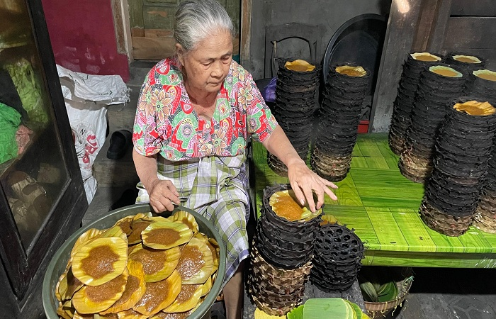

CERITA USAHA
Tentang Aisyah Cake
Aisyah Cake adalah UMKM yang menyediakan berbagai kue khas dan jajanan tradisional khususnya khas Pemalang untuk teman belajar, bekerja, bersantai, dan berdiskusi.

Nilai yang Kami Bawa
- Mengutamakan produk lokal.
- Menyediakan berbagai pilihan rasa.
- Menggunakan bahan yang berkualitas.
- Memberikan pelayanan yang ramah.